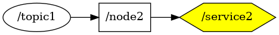

<body>
<a href="../full_graph.html">back to big graph</a>
<br />

<map id="_service2" name="_service2">
<area shape="rect" id="node1" href="_node2.html" title="node: /node2" alt="" coords="5,5,92,53"/>
<area shape="poly" id="node2" href="_service2.html" title="node: /service2" alt="" coords="302,29,262,5,181,5,140,29,181,53,262,53"/>
</map>


</body>
